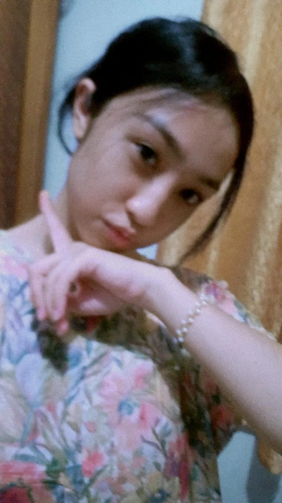
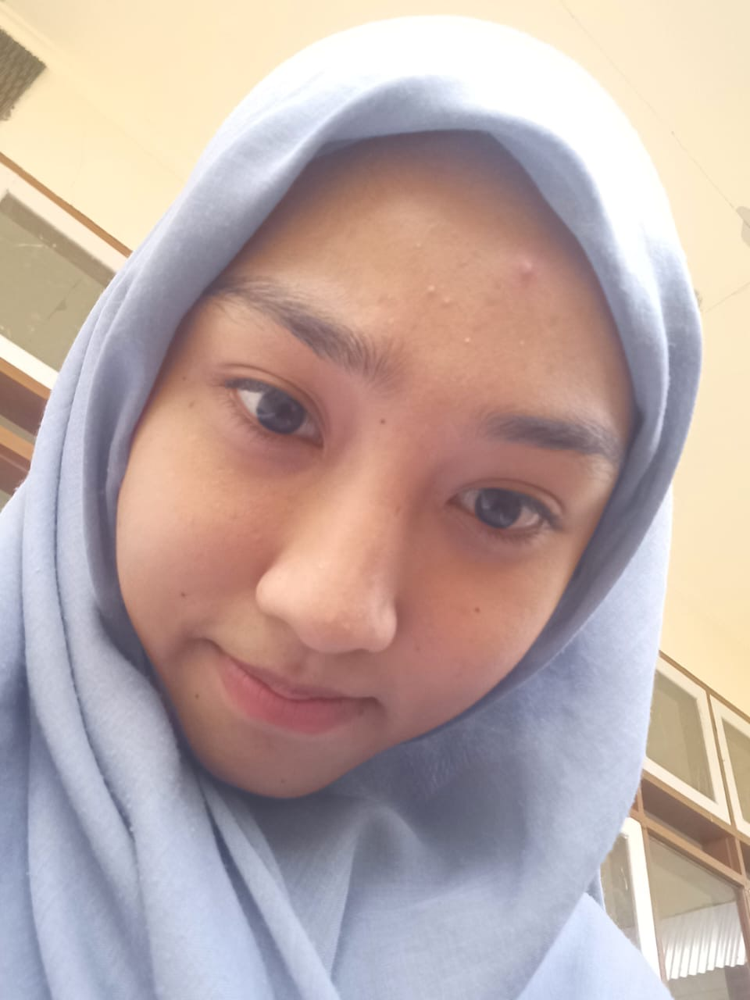
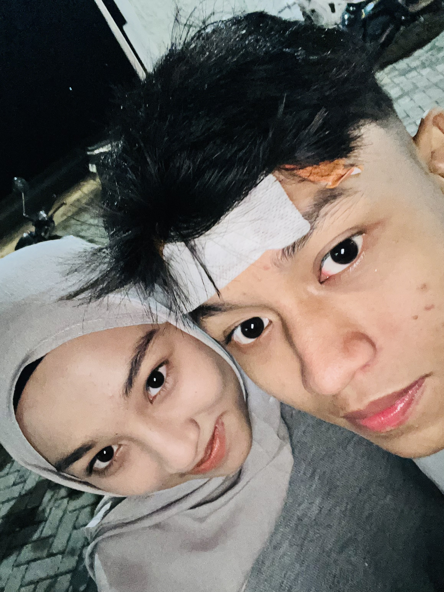
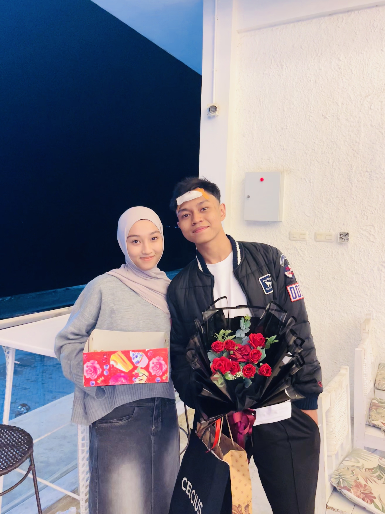
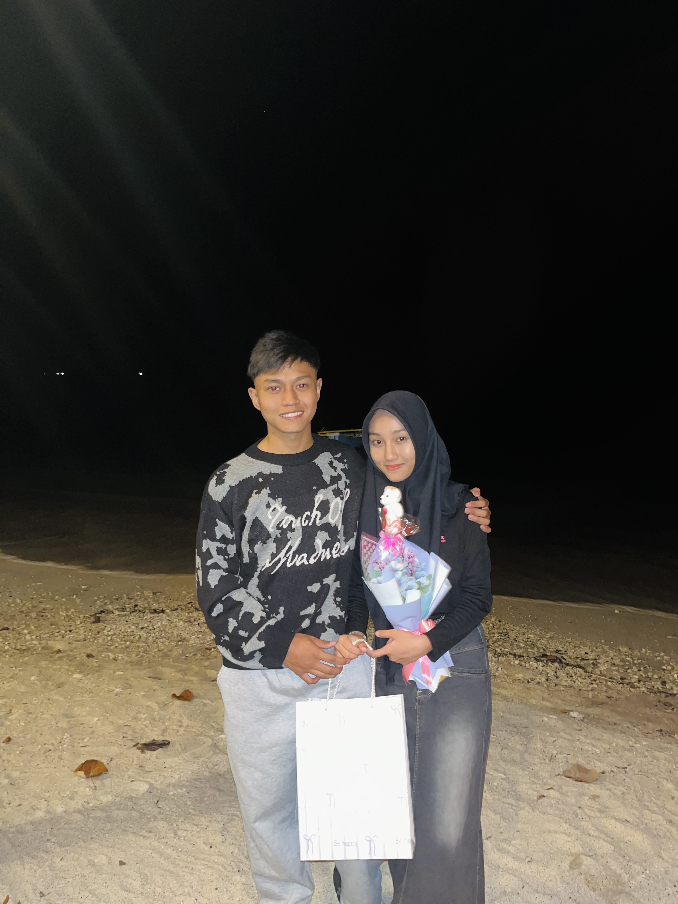
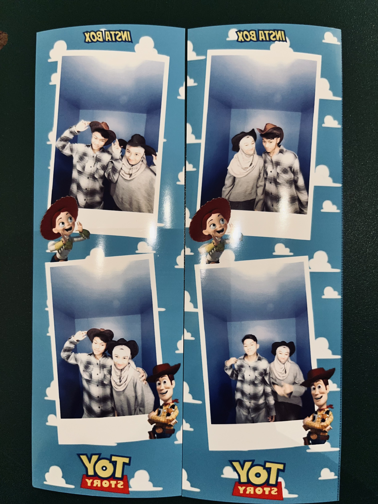
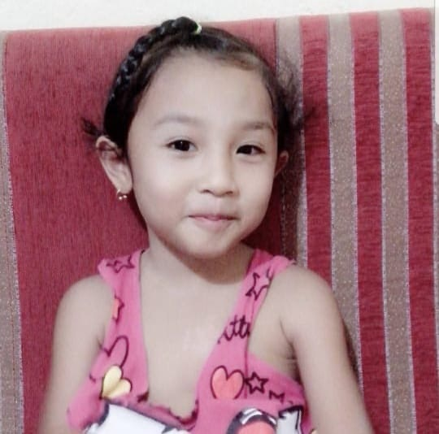

Happy Birthday 🤍
Chelsea Wan Pakaya
10 July 2010
Made with love by Bariq 🤍A Little Gift For You 🌸
Sebuah tempat kecil yang berisi cerita, kenangan, dan doa terbaik untuk seseorang yang sangat berarti.
Our Memories 📸

Memory #1
Selfie bersama wanita tercantik di sejagat raya. 🤍

Memory #2
Salah satu momen favorit Bariq bersama Chelsea 🤍

Memory #3
Sebuah kenangan yang selalu ingin Bariq ingat 🤍

Memory #4
Momen indah bersama Chelsea 🌸

Memory #5
Terima kasih untuk setiap cerita yang kita punya 🤍

Memory #6
Kenangan kecil yang sangat berarti 🤍
A Letter For You 💌
Happy Birthday, Chelsea Wan Pakaya. 🤍🎂 Happy birthday, Chelseaa. Nama e cantikk, orang e lebih cantikk lagi. 🤍 Selamat bertambah umur, sayang. Semoga di umur yang baru ini Chelsea semakin dewasa, semakin rajin belajar, semakin dekat dengan Allah SWT, semakin sayang sama Mama, Papa, dan Ade, serta semua urusan Chelsea dimudahkan. Aamiin. Barik tidak pernah lepas dari doa untuk Chelsea. Setiap doa yang terbaik selalu Barik titipkan kepada Allah, semoga semua impian Chelsea satu per satu bisa tercapai. 🤍 ⸻ Hari ini adalah hari yang paling Barik tunggu-tunggu. Hari yang paling spesial buat orang yang paling Barik sayang. Maaf karena Barik belum bisa datang menemani Chelsea di hari spesial ini. Jujur, Barik juga menyesal dan sudah berusaha mencari banyak cara supaya bisa hadir. Semoga doa-doa Barik hari ini cukup menjadi bukti betapa besar rasa sayang Barik kepada Chelsea. Walaupun sekarang kita berjauhan, semoga rasa sayang ini tetap sama, tetap tumbuh, dan tetap bertahan selamanya. Miss you, Chel. 🤍 ⸻ Semoga Chelsea selalu sehat, panjang umur, selalu diberkahi Allah, dan selalu dikelilingi oleh orang-orang yang tulus menyayangi Chelsea. Semoga semua cita-cita Chelsea tercapai. Barik akan selalu mendoakan itu. Terima kasih juga untuk Mama dan Papa Chelsea yang sudah menghadirkan perempuan sebaik, secantik, sepintar, dan seshalihah Chelsea ke dunia ini. MasyaAllah… Menurut Barik, Chelsea adalah definisi perempuan yang luar biasa. Terima kasih karena sudah hadir di hidup Barik. ⸻ Chelsea adalah salah satu alasan terbesar Barik ingin berubah menjadi lebih baik. Barik ingin mengejar masa depan yang lebih baik. Barik ingin membanggakan orang tua. Dan suatu hari nanti, kalau Allah mengizinkan Barik sukses, Chelsea adalah salah satu orang yang punya peran besar dalam perjalanan itu. ⸻ Semoga selama di Luwuk Chelsea semakin semangat belajar, semakin banyak prestasi yang diraih, dan selalu menjaga diri. Barik juga titip satu hal… Semoga Chelsea tetap menjaga hati dan menjaga jarak dengan lawan jenis yaa. 🤍 Bukan karena Barik tidak percaya. Justru karena Barik sangat menjaga hubungan ini. ⸻ Barik tahu Barik belum sempurna. Tapi Barik akan terus berusaha menjadi laki-laki yang lebih baik untuk Chelsea. Terima kasih sudah menerima Barik apa adanya. Itu adalah salah satu nikmat terbesar yang selalu Barik syukuri kepada Allah. ⸻ Chelsea… Jangan lupa senyum yaa. Karena senyum Chelsea itu cantik sekali. MasyaAllah. Tapi… jangan senyum-senyum sama cowok lain yaa. 🤭🤍 ⸻ Semoga Chelsea selalu bahagia. Kalau Allah kasih kesempatan Barik pulang ke Luwuk, Barik ingin ketemu Chelsea. Semoga Allah mudahkan semua urusan Chelsea. Semoga Allah juga mudahkan jalan kita berdua. Kalau memang Allah menakdirkan kita berjodoh… Semoga Allah menjaga kita sampai waktu itu tiba. Aamiin Ya Rabbal ’Alamin. ⸻ 🤍 Happy Birthday, My Favorite Person. Semoga Chelsea menjadi pribadi yang lebih baik dari hari ke hari. Semoga selalu bahagia. Karena setiap kali Chelsea tersenyum… Barik juga ikut bahagia. Senyum Chelsea adalah salah satu penyemangat terbesar dalam hidup Barik. Terima kasih sudah menjadi bagian dari hidup Barik. I Love You Till Jannah. ❤️🩹🤍
Thank You For Existing 🤍
Semoga Allah selalu menjaga Chelsea dan memudahkan semua langkahmu.